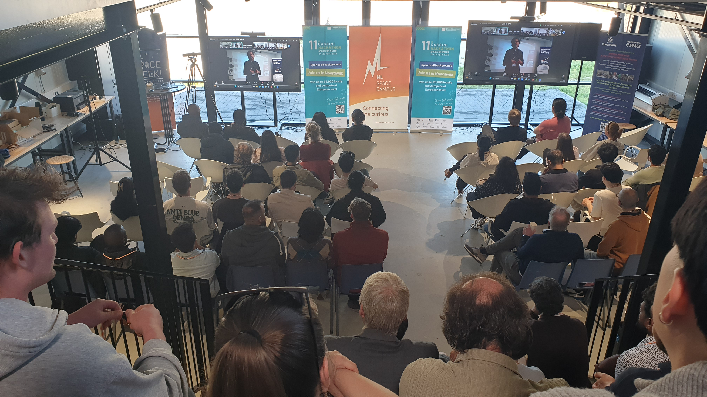

WaterSim — Satellite Data Visualization


The 11th CASSINI Hackathon (Space for Water) took place in the Netherlands on April 24–26, 2026, at the NL Space Campus in Noordwijk.
Our team (consisting of myself as the Unity Visualization Expert, a UX expert, two Machine Learning Engineers, and a PhD candidate specializing in water studies) used European satellite data to predict floods in Den Haag. My primary responsibility was to visualize this concept using Unity. The user can drag a slider to a chosen year and observe the prediction for that specific year. The machine learning engineers provided the data, and I leveraged the Cesium Unity plugin to integrate real Earth data and visuals.
Project Information
- GitHub Repository: watersim-cassini2026
- Hackathon Overview: CASSINI Hackathon (Space for Water)
Description (From Our Submission)
Globally floods cause damages of around 400 billion USD a year. Similarly, the catastrophe insurance market is currently valued at 215 billion USD and projected to grow to 360 billion USD by 2035. Nonetheless, the tyranny of the changing climate presents a necessary opportunity for technological solutions to protect our businesses and economy, and a profitable business opportunity.
We leverage European space data and state-of-the-art machine learning technology to predict climate risks such as floods, that affect property valuation and significant business risk. Furthermore, we present novel solutions such as realistic visualization and virtual reality experiences to help asset developers and businesses plan their business ventures and ensure climate risk management.
Technological Solution
We’ve used the EO4Flood dataset with multiple hydrometeorological datasets such as rainfall, snow, soil moisture, river water height, river width, etc. from European space missions, such as Sentinel 1,2,3,6, SWOT, Jason 1,2,3, etc. We use machine learning to fill spatiotemporally sparse data gaps, applying GCN + GRU architecture on graph models of river networks to learn parameters like river flow.
Team Formation
- 🌊 Amin Shakya | PhD (ongoing) in Space-borne Hydrology
- 👩🔬 Dr. Salima Bahri | Machine Learning Engineer
- 🌍 José Miguel Olvera Puentes | Climatologist, Machine Learning & Data Engineering
- 🎨 Rucha Nagare | UX/UI designer
- 🥽 Mohammed Marzouq | Spatial Computing & 3D Data Visualization Engineer